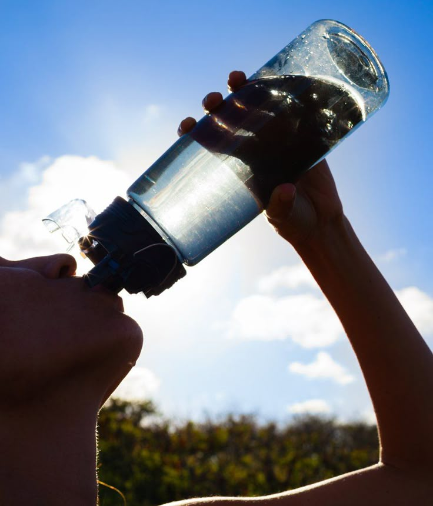
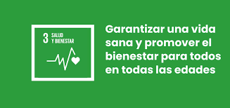

Promoviendo hábitos saludables • Bienestar físico • Salud mental • Vida equilibrada 🌿
El Objetivo de Desarrollo Sostenible relacionado con la salud y el bienestar busca garantizar
una vida sana y promover el bienestar integral en todas las etapas de la vida. Este objetivo
es fundamental, ya que la salud influye directamente en la productividad, la felicidad
y el desarrollo social de las personas.
En la actualidad, muchas personas enfrentan problemas como el estrés constante, la mala
alimentación, la falta de actividad física y el deterioro de la salud mental. Estos factores
afectan no solo al individuo, sino también a la sociedad en general.
Adoptar hábitos saludables como una alimentación balanceada, ejercicio regular, descanso
adecuado y cuidado emocional puede prevenir enfermedades y mejorar significativamente la
calidad de vida. La salud no solo implica la ausencia de enfermedad, sino un equilibrio
entre cuerpo, mente y entorno.
Este sitio tiene como propósito informar, concientizar y motivar a las personas a mejorar
su estilo de vida mediante pequeñas acciones diarias que generan grandes cambios a largo plazo.

El ODS 3 tiene como meta principal garantizar una vida sana y promover el bienestar
para todos. Este objetivo abarca una amplia gama de temas relacionados con la salud,
desde la atención médica básica hasta la prevención de enfermedades y la salud mental.
Entre sus principales objetivos se encuentran la reducción de la mortalidad infantil
y materna, el combate a enfermedades transmisibles como el VIH y la tuberculosis,
así como la prevención y tratamiento de enfermedades no transmisibles como la diabetes
y problemas cardiovasculares.
Otro aspecto clave es la salud mental, que en los últimos años ha cobrado gran importancia
debido al aumento de estrés, ansiedad y depresión en la población. Promover el bienestar
emocional es tan importante como cuidar la salud física.
Asimismo, el ODS 3 busca garantizar el acceso universal a servicios de salud de calidad,
medicamentos seguros y vacunas, así como fortalecer los sistemas de salud en todo el mundo.
La prevención es una herramienta fundamental: fomentar la educación en salud permite a las
personas tomar decisiones informadas sobre su cuerpo y su estilo de vida, reduciendo riesgos
y mejorando su bienestar general.

Somos un equipo comprometido con la promoción de la salud y el bienestar en la vida cotidiana.
Nuestro objetivo es generar conciencia sobre la importancia de adoptar hábitos saludables
que permitan mejorar la calidad de vida de las personas.
Buscamos ayudar a la sociedad implementando estrategias simples pero efectivas, como fomentar
una alimentación equilibrada, promover la actividad física constante, cuidar la salud mental
y prevenir enfermedades a través de la educación.
Creemos firmemente que pequeños cambios diarios pueden generar grandes resultados a largo plazo.
Por ello, nuestro proyecto se enfoca en motivar a las personas a tomar decisiones responsables
sobre su salud y bienestar.
En esta sección compartiremos artículos, consejos y contenido relacionado con la salud física, la salud mental y el bienestar integral. Aquí podrás encontrar información útil para mejorar tus hábitos y calidad de vida.
Somos estudiantes de UVM Campus Texcoco comprometidos con el desarrollo de proyectos
que impacten de manera positiva en la sociedad.
Este sitio web fue desarrollado con el objetivo de difundir información relevante sobre
el ODS de Salud y Bienestar, integrando conocimientos sobre prevención, hábitos saludables
y la importancia del equilibrio físico y mental.
A través de este proyecto buscamos no solo informar, sino también inspirar a las personas
a mejorar su estilo de vida, promoviendo una cultura de bienestar integral que contribuya
a una sociedad más sana.